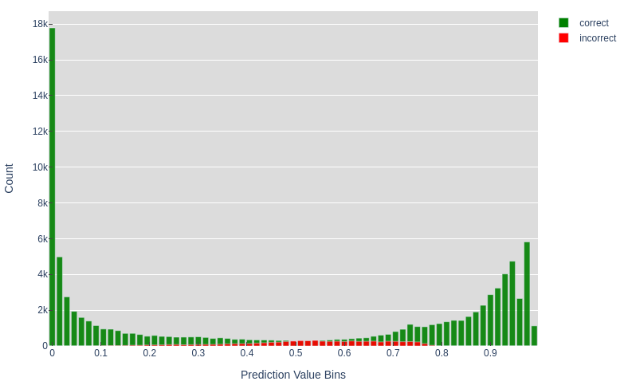
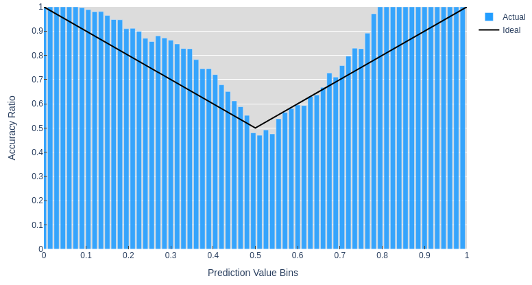

Prediction Scores are not Probabilities
Improving the accuracy of Machine Learning model predictions is the subject of much study. Estimating and calibrating model uncertainty is another field of study, but receives much less attention. I hope to do a full post or series on uncertainty in ML, but for this post I'll be focusing on neural networks and how their outputs lack probabilistically reliable information.
Imagine a neural net used for a medical diagnosis that determines if a surgery is necessary. Such a model should have high accuracy when recommending that a surgery be performed, but it would be additionally useful if the model provided a confidence estimate of its predictions. For example, if it recommended surgery with $75\%$ confidence, that should mean that out of 1000 cases where surgery was recommended with $75\%$ confidence, around 750 cases would have actually required surgery. This would allow for experts and patients to determine if that prediction was worth acting on or if more tests or consideration were needed before proceeding.
I've provided code using both Pytorch and Tensorflow so that you can see for yourself how various things like the amount of data, training time, and model complexity affect the over or under confidence of a model's predictions. I hope this post and code help to illustrate how common neural networks and training procedures don't inherently result in models that produce well calibrated confidence estimates.
I'll be using the same architecture as Model 3 from my first post with one change: Instead of using a single output value, I'll use two outputs with a Softmax function. This will make the model more similar to models typically used for multi-class classification problems.
It's this Softmax function that seems to be at the source of the confusion about whether or not the outputs for a NN constitute valid probabilities. If you search something along the lines of "how to get a probability from neural network output" in Google, you'll get things like a medium article with the title "The Softmax Function, Neural Net Outputs as Probabilities", and a StackExchange post asking a similar question where the top 2 answers suggest using the softmax function. The 3rd response with only 1 upvote suggests "Softmax of state-of-art deep learning models is more of a score than probability estimates."
So which is right? Let's quickly define what it would mean if the softmaxed outputs of a K-class classifier were probabilities. First, the probabilities estimates for all classes should add to $1$. If the sum is greater than $1$ this would imply a greater than $100\%$ chance of some outcome(s). Assuming distinct classes (a model cannot predict that an image is both a cat and a dog) this is not possible. The Softmax function covers this requirement converting a set of any real valued scores into a set of positive values with a sum of 1. Second, as discussed in the case of a surgery recommendation system, the probability estimate should be well calibrated: prediction scores should equal the proportion of correct predictions e.g. predictions with $75\%$ confidence should be correct $75\%$ of the time. This is the requirement that we'll be verifying.
We'll use the synthetic XOR dataset from post 1 with $2$ output classes: $not\_xor$ and $is\_xor$. The benefit of a synthetic dataset is that we can generate as little or as much train and validation data as we want, in order to explore the effect that has on the model outputs. After running training we can count the number of predictions that were classified correctly and plot those in bins according to their value.
This model gets around 95% accuracy and we can see that there are a large number of very high and low predictions that are all correct. Whereas the predictions with scores near $0.5$ seem equally as likely to be right or wrong. This is a similar trend to what we might expect if the prediction scores were valid probabilities. The next plot shows the ratio of correct predictions in each bin and makes it a bit easier to make sense of the values in the middle bins.
You might expect the ideal line to be $y=x$, but for values $<0.5$ this is not the case. The prediction (the class with the largest value) will always be $>0.5$ since this is a $K=2$ class classification and the predicted scores always sum to $1$. I've opted to just run with this symmetry and include the accuracy ratios for both classes in one plot. So a $not\_xor$ prediction with a score of $0.9$ and an ideal accuracy ratio of $0.9$ is the same as a $is\_xor$ score of $0.1$, which we can see in corresponds to the ideal ratio of $0.9$.
Figure 2. shows that in many cases the actual proportion of correct predictions deviates significantly from the ideal values that would be output if the model predictions were probabilities. This model underestimates some of its predictions: the model outputs a low score of around $0.80$, but gets $100\%$ accuracy for those examples. These plots have been generated from validation data on $50\times$ more data than the training set to ensure we get a representative sample. In real applications of machine learning if such a large proportion of data was held out from the training process to be used to verify the calibration of the confidence of the model, it would likely not be very accurate.
Try messing around with different settings in the notebook and you'll likely see that the graph above shows a relatively well calibrated model1(especially compared to one in which you try to squeeze out as much accuracy as possible). What I hope is clear is that if this is the case with such a simple model and a large amount of uniform data, then it is unlikely that more complex models and datasets would produce valid probability estimates as outputs.
As mentioned earlier there are a number of factors that affect how close prediction scores are to being valid probability estimates of accuracy, the animation above shows how these estimates vary over the course of training, but a full analysis of these effects is beyond the scope of this post. If you're interested in learning more, this paper analyzes common models like ResNet, digs deeper into the effect of various modeling choices, and introduces a way to calibrate models to output scores that are better probability estimates.
Feel free to reach out with any questions or comments on the tweet below and follow me @tuckerkirven to see announcements about other posts like this.
tweet
Footnotes:
1. It is often the case that while neural network scores are not perfectly calibrated probability estimates, there is a high correlation between scores and accuracy. In other words lower scores more often result in incorrect results and higher score result in correct results. This just can't be relied upon to always be the case. Back to footnote source